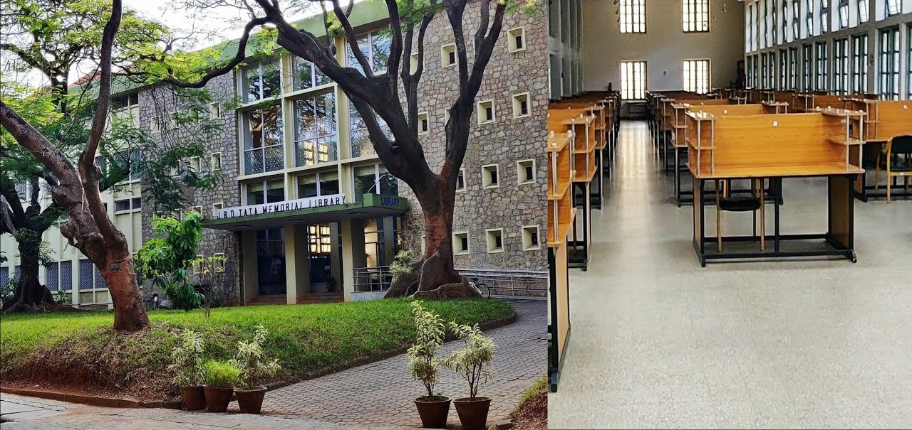

The library of the Indian Institute of Science Banglore, was
established in 1911 and it is one if the first department settled in
the institute.
eJournals : Publisher-wise
- AAAS (American Assn. for the Advancement of Science)
- AACR (American Association for Cancer Research)
- AAI (American Association of Immunologists)
- ACM (Association for Computing Machinery)
- ACS (American Chemical Society)
- AIAA (American Institute of Aeronautics & Astronautics)
- AIP (American Institute of Physics)
- AMetS (American Meteorological Society)
- AMS (American Mathematical Society)
- APhylS (American Physiological Society)
Research Databases
- Turnitin
- Web of Science (WoS)
- InCites (Benchmarking & Analytics)
- InCites Essential Science Indicators (ESI)
- Journal Citation Reports (JCR)
- Scopus (Elsevier)
- SciVal (Elsevier)
- SciFinder-n Scholar (CAS)
eBooks: Publisher-wise
- Academic Press (Elsevier)
- AMS (American Mathematical Society)
- CUP (Cambridge University Press)
- CRC Press
- Elsevier
- John Wiley
- Nuclear Magnetic Resonance: Volume 35